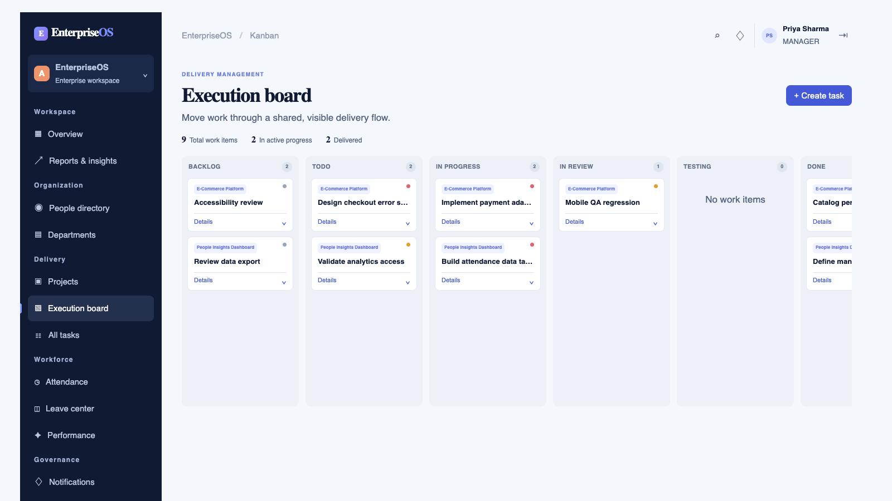

UCS553 – Cloud Computing · 2026-2027
EnterpriseOS on AWS
A Cost-Safe Serverless and Event-Driven Cloud Architecture for Workforce Management
EnterpriseOS is our multi-tenant workforce-management application (employees, attendance, leave, projects, tasks, notifications and audit trail), originally built with Node.js, Express and PostgreSQL. This project re-platforms it onto Amazon Web Services without changing its business logic and with zero personal cost. The unchanged app runs on AWS Lambda behind an API Gateway HTTP API; secrets live in Systems Manager Parameter Store; leave decisions and task assignments are processed asynchronously through Amazon SQS, a worker Lambda and Amazon SNS, with a dead-letter queue; CloudWatch provides logs and alarms; and the whole stack is one AWS SAM template. 56 automated tests pass, linters and the dependency audit report no issues, and a demonstration costs about US$0.01–0.03 of credit.
Problem statement. The original EnterpriseOS ran on a platform that hid the infrastructure. We set out to show how an existing application can be moved to AWS so that it demonstrates serverless compute, managed messaging, secret management, IAM, monitoring and infrastructure as code, while keeping every feature unchanged and spending nothing personally.
Objectives.
Why cloud. Lambda charges only per request and scales automatically; SQS stores events durably and retries failures; Parameter Store encrypts secrets; CloudWatch gives monitoring without extra software; and infrastructure as code makes the environment reproducible in minutes.
Key idea: loopback bridge. Lambda receives JSON events, not HTTP connections. On the first request in each container, our handler loads secrets from Parameter Store, starts the unchanged Express app on a private port (127.0.0.1) and replays every API Gateway event as a real HTTP request. All existing security checks (headers, CORS, token and role checks, tenant-scoped SQL) therefore behave exactly as they do locally, with about 1 ms of overhead and no new dependency.
| Service | Purpose | Why |
|---|---|---|
| Lambda | Web app/API and event worker | No idle cost, auto-scaling |
| API Gateway (HTTP) | HTTPS endpoint, throttling, access logs | Cheaper than REST API |
| SQS + DLQ, SNS | Event buffer, retries, notifications | Reliable asynchronous processing |
| Parameter Store | Encrypted secrets | No extra charge |
| CloudWatch | JSON logs, 4 alarms | Built-in monitoring |
| SAM / CloudFormation | Whole stack as code | Reproducible, one-command delete |
The original notification and audit rows are still written immediately; the event is an extra step that never blocks the user. Only failed messages are retried, and after three failures they move to the dead-letter queue, which raises an alarm. Events carry identifiers only, never names or e-mails.
preflight.sh, put-parameters.sh, deploy.sh (tests → package → smoke test → confirm → deploy → health check) and cleanup.sh; GitHub Actions run tests, audit, linters and a secret scan on every push; deployment is manual only.Tools: Node.js 24, Express 4, PostgreSQL/pg-mem, AWS Lambda, API Gateway, SQS, SNS, Systems Manager, CloudWatch, SAM, GitHub Actions, AWS CloudShell, node:test, cfn-lint, ShellCheck.




| Check | Result |
|---|---|
| Automated tests (21 original + 35 new, incl. Lambda end-to-end) | 56 / 56 passed |
| Dependency audit (npm audit) | 0 vulnerabilities |
| Template, script and workflow linters (cfn-lint, ShellCheck, actionlint) | 0 findings |
| Secret scan (verified with a planted fake key) | Passed |
| Built Lambda package smoke test | Health, UI and login: HTTP 200 |
| Cold start / warm request overhead (local) | ≈ 0.75 s / ≈ 1 ms |
| Pre-existing defects found and fixed | 2 (manager leave approval, task move) |
EnterpriseOS now runs on a serverless, event-driven AWS architecture with its business logic unchanged and zero personal cost. The project applies pay-per-use compute, a managed HTTPS front door, reliable messaging with a dead-letter queue, encrypted secrets, least-privilege IAM, monitoring and infrastructure as code, and backs every claim with tests and evidence.
Limitations: in the zero-cost demo mode each Lambda container keeps its own in-memory data; the login rate limit is per container; the AWS Academy sandbox requires the broad LabRole.
Future scope: Amazon RDS/Aurora PostgreSQL with RDS Proxy, CloudFront with AWS WAF and a custom domain, Amazon Cognito sign-in, DynamoDB for global rate limiting, SES e-mail notifications, X-Ray tracing and keyless GitHub OIDC deployments.
Source code: github.com/Ak7950/EnterpriseOS-AWS-Cloud (README with setup, deployment and cleanup steps).